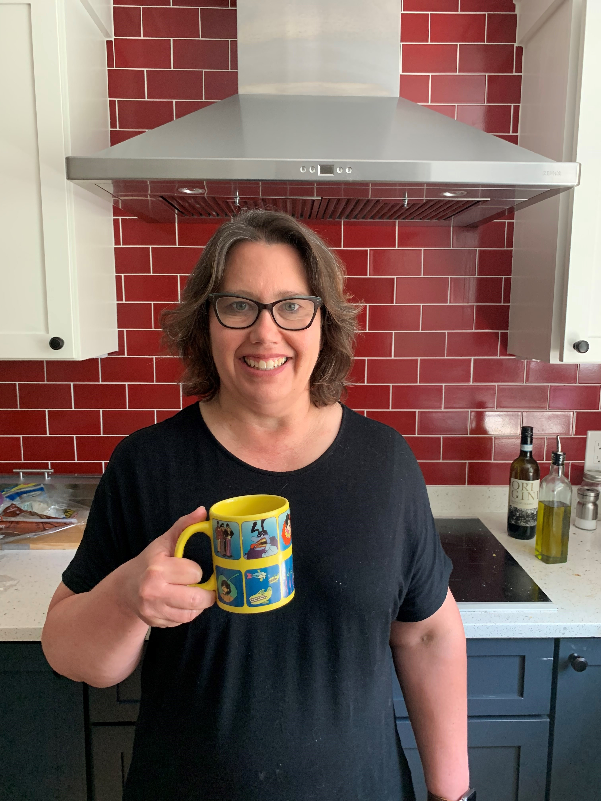
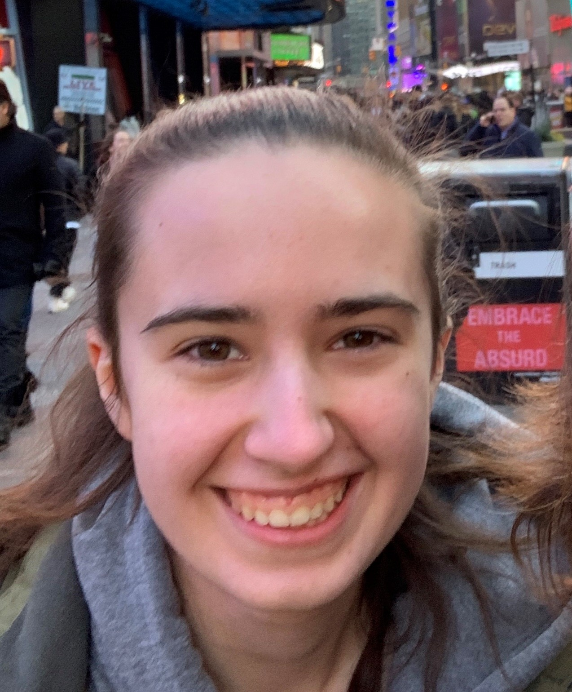

Teresa Hubscher-Younger
Facilitator & Computer Science PhD
Teresa has been coaching Concord Girls Who Code clubs since 2017. She really enjoys working with girls on cool projects and enjoys teaching the design process with coding.

Hannah Tandang
Teen Facilitator
Hannah Tandang has been teaching at the Concord Girls Who Code since 2019. Building the knowledge of STEM to other young girls is very important to Hannah so she really values her time teaching.

Sophia Hubscher
Facilitator
Phasellus eget enim eu lectus faucibus vestibulum. Suspendisse sodales pellentesque elementum.
Dorrie Karlin
Facilitator & Branch Librarian
Dorrie Karlin is the Fowler branch librarian for the Concord Free Public Library, and she feels so lucky to get to see the Concord Girls Who Code in action. She is their Librarian and Cheerleader!